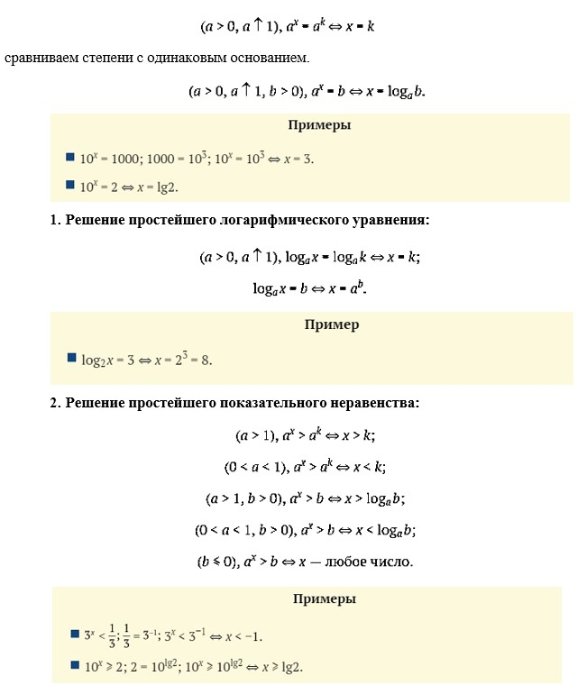
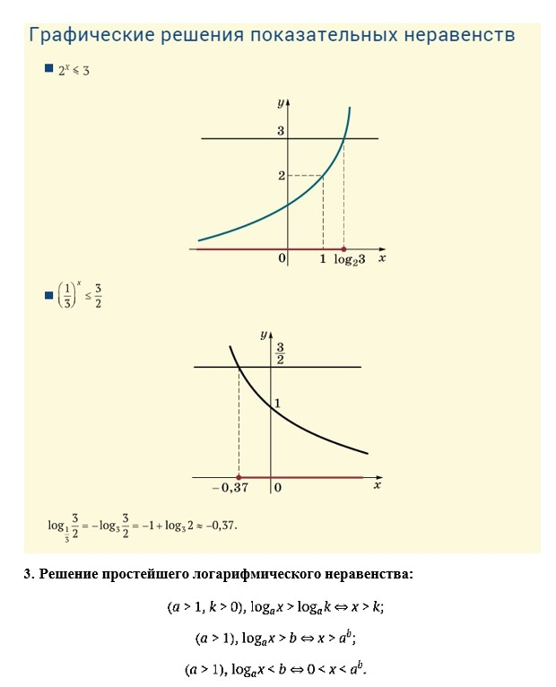
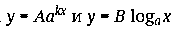
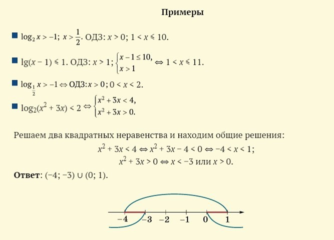
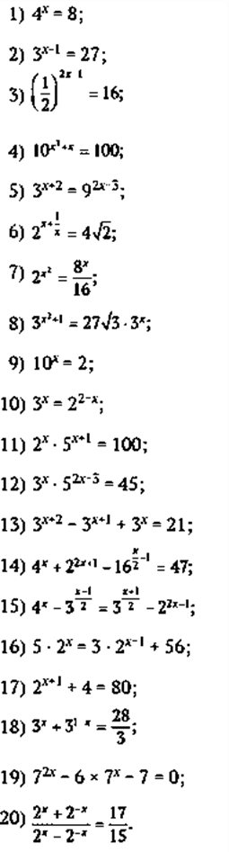
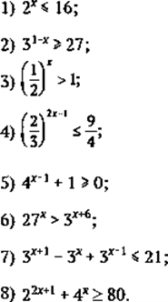

Решение показательных и логарифмических уравнений
1.Решение простейшего показательного уравнения:


При решении логарифмических неравенств полезно указывать область допус- тимых значений (ОДЗ). Если используются логарифмы по основаниям, меньшим 1, то надо помнить, что соответствующая функция является убывающей. Основой решения показательных и логарифмических неравенств является то, что функции вида  монотонны на всей области определения. Каждое свое значение c они принимают ровно один раз, например в точке x0. По одну сторону от этой точки значения функции больше c, по другую — меньше.

ВОПРОСЫ И ЗАДАНИЯ
1.Решить уравнения:

2.Решить неравенства:
